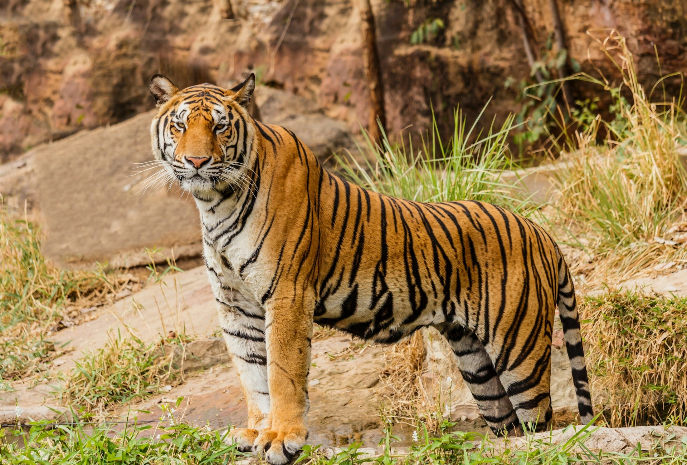
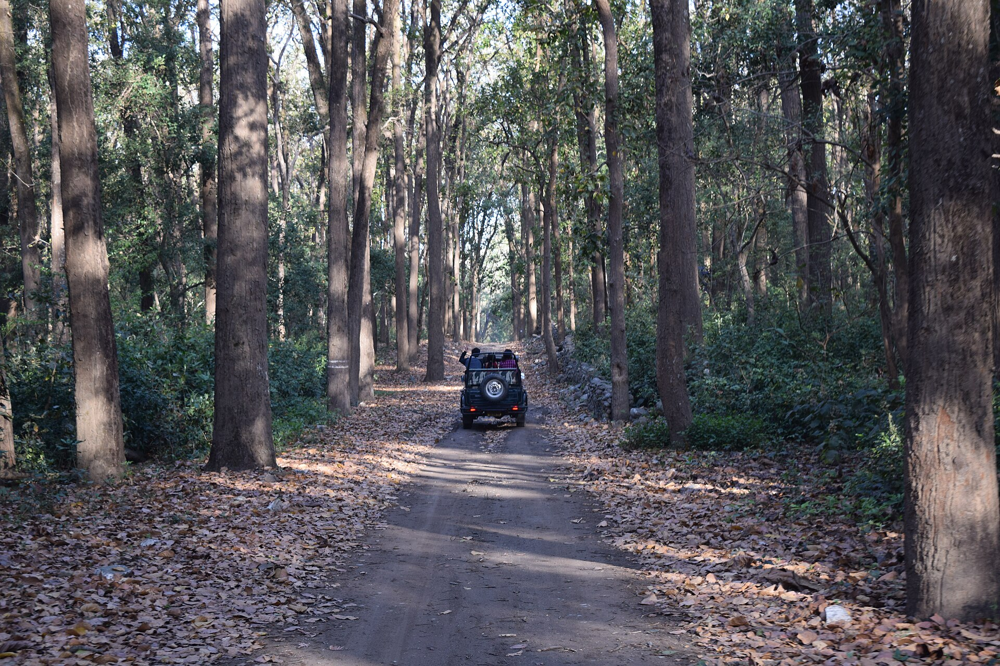
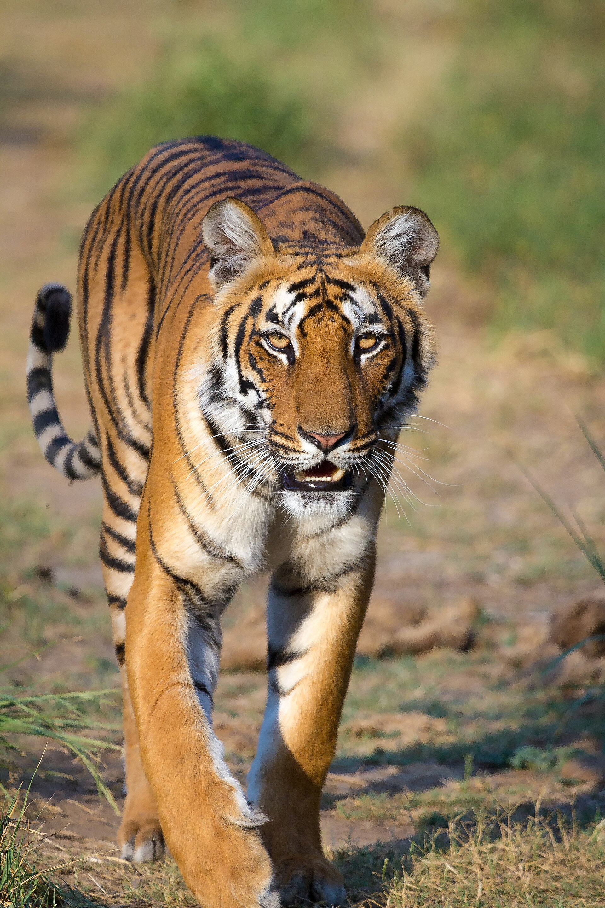
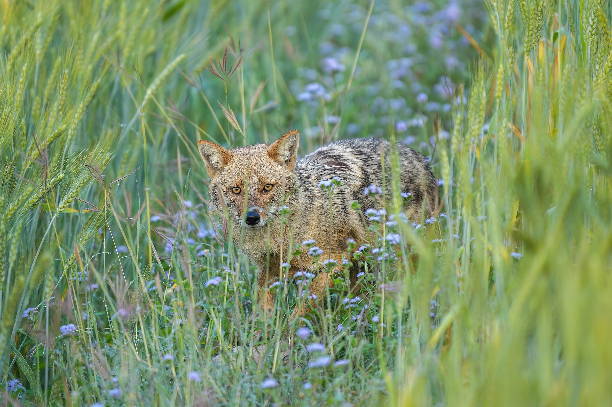
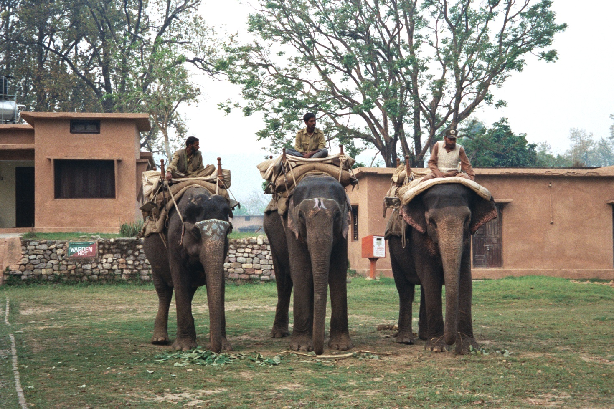
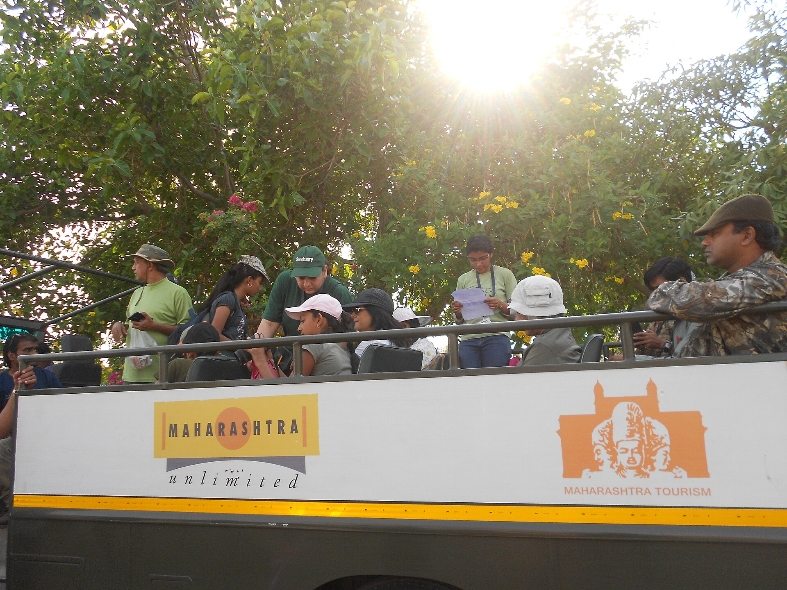

100% Verified Govt Permits
Every Corbett safari permit is issued directly through official Uttarakhand Forest Department systems with verified computerised barcodes.
India's oldest national park nestled along the scenic foothills of the Himalayas. Explore ancient sal woodlands, sprawling Dhikala grasslands, and picturesque Ramganga riverbeds renowned for majestic Royal Bengal Tigers, wild elephant herds, and over 600 species of resident and migratory birds.
Breathtaking glimpses of Corbett's untamed wildlife, ancient sal canopies, and apex predators captured by our on-ground naturalists & travelers.


Located in Ramnagar, Nainital District, Uttarakhand 244715. Seamlessly connected by broad-gauge rail, high-speed Delhi expressways, and Pantnagar Airport.
Every Corbett safari permit is issued directly through official Uttarakhand Forest Department systems with verified computerised barcodes.
Our handpicked safari drivers and certified nature guides boast 15+ years of forest experience tracking tiger pugmarks and listening for alarm calls.
We monitor permit releases across Dhikala, Bijrani, Jhirna, and Dhela to secure your preferred zone and shift well before public allocations exhaust.
Zero surprise charges at the gate. Every quote covers Gypsy hire, forest permit, naturalist guide fee, road taxes, and resort pickup coordination.
Transparent pricing for official safari drives across Jim Corbett. Your final quote is customized based on your selected zone, vehicle mode, and travel date.
 Most Popular
Most Popular
Explore prime Royal Bengal Tiger habitat in Corbett's legendary Bijrani, Jhirna, and Dhela core zones.
 Dhikala
Classic
Dhikala
Classic
High-clearance open safari mini-bus operating directly into the heart of Dhikala grasslands and Ramganga riverbed.
 Eco Explorer
Eco Explorer
Quiet forest trails, ancient temple ruins, and rewarding birding opportunities in Sitabani & Phato zones.
 Family
Favourite
Family
Favourite
A hassle-free 2-night getaway combining luxury jungle resort stay, all gourmet meals, and private safari drives.
 Pro Focus
Pro Focus
Specialized tracking for wildlife photographers seeking optimal lighting angles, extended pause at sightings, and bird tracking.
 Couples
Getaway
Couples
Getaway
An intimate wilderness escape crafted around private riverside candlelight dinners, luxury cottage, and private safaris.
Choose your preferred Corbett zone (Dhikala, Bijrani, Jhirna, Dhela) and whether you want a morning or afternoon game drive.
Provide valid government photo IDs (Aadhaar Card, Passport, or Voter ID) for all travelers as mandated by the Forest Department.
Your official computerised forest permit is processed directly through the Uttarakhand government booking portal with full invoice.
Your registered 4x4 Gypsy and naturalist guide arrive at your Ramnagar resort 30 minutes before gate opening for departure.
Jim Corbett National Park, established in 1936 as Hailey National Park, holds the legendary honour of being India's first national park and the historic birthplace of Project Tiger in 1973. Situated in the picturesque Nainital and Pauri Garhwal districts of Uttarakhand, it preserves one of the planet's most magnificent ecosystems.
Named in tribute to the celebrated British-Indian conservationist, author, and naturalist Jim Corbett, this protected biosphere is celebrated worldwide for hosting the highest density of Royal Bengal Tigers anywhere on Earth (~260+ resident tigers).
Characterized by towering sal and sheesham woodlands, rolling alluvial grasslands (chaurs), deep ravine riverbeds, and the turquoise waters of the Ramganga River, Corbett provides sanctuary to over 50 mammal species, 25 reptile species, and more than 600 species of resident and migratory birds.
 Ramnagar,
Uttarakhand
Ramnagar,
Uttarakhand
Ancient sal woodlands, riverbed grasslands, and pebble-strewn streams form the heart of Project Tiger.
Jim Corbett National Park is divided into 7 distinct tourism zones, each regulated with strict vehicle quotas by the Uttarakhand Forest Department to preserve wildlife ecology.

The crown jewel of Corbett. Famous for panoramic grassland vistas along the Ramganga reservoir, immense elephant breeding herds, and legendary tiger prides.

Premier 4x4 Gypsy core zone celebrated for high tiger encounter rates, pristine sal tree canopies, deep stream crossings, and dramatic machaan viewpoints.

Located on the southern boundary, Jhirna remains open all 12 months. Exceptional habitat for sloth bears, wild boars, sambar deer, and tigers roaming amidst bamboo foliage.

Added to Corbett's eco-tourism roster in 2014, Dhela features mixed sal forests, active waterholes, and high tiger activity alongside exceptional avifauna diversity.
Mountainous safari terrain located along the Ramganga and Mandal rivers. Famed for steep rocky cliffs, rare Otters, Mahseer fish viewing, and exotic Himalayan birdwatching.

A sacred forest associated with the Ramayana legend of Goddess Sita. Noted for peaceful woodland trails, river streams, wild elephant herds, and historic ashram ruins.

Corbett's newest tourism hotspot in the Terai West division. Known for famous treehouse night stays, dense teak forest trails, and frequent tiger & leopard sightings near water channels.
| Season & Months | Morning Entry | Morning Exit | Evening Entry | Evening Exit |
|---|---|---|---|---|
| Oct – Feb (Winter) | 06:30 AM | 10:00 AM | 01:30 PM | 05:00 PM |
| Mar – Apr (Spring) | 06:00 AM | 09:30 AM | 02:30 PM | 06:00 PM |
| May – Jun (Summer) | 05:30 AM | 09:00 AM | 03:00 PM | 06:30 PM |
| Jul – Sep (Monsoon) | Dhikala/Bijrani Closed | Dhikala/Bijrani Closed | Jhirna & Sitabani Open | 06:00 AM & 02:30 PM |
Every season transforms Corbett's Himalayan landscape. Choose summer for highest predator visibility or winter for crisp misty mornings, elephant herds, and migratory birds.
Ramnagar is the sole administrative gateway to Jim Corbett National Park. It is easily accessible by road, express trains, and regional flights from Delhi NCR.
Everything you need to know about Dhikala day permits, gypsy reservations, checkpost rules, cancellation policies, and best seasons.
Permits for Dhikala, Bijrani, and Jhirna fill fast. Speak with our Ramnagar safari desk today for real-time gate availability and customized packages.